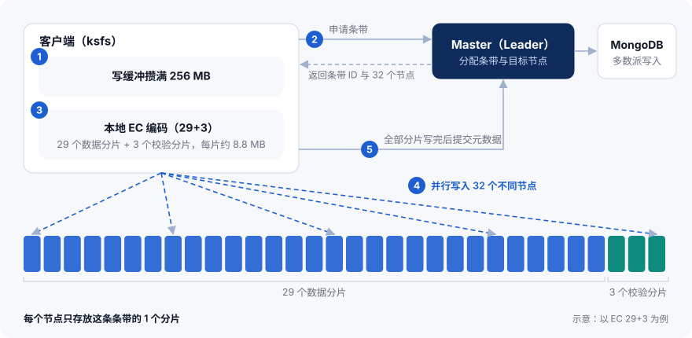
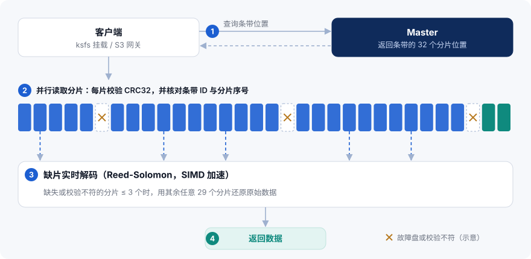
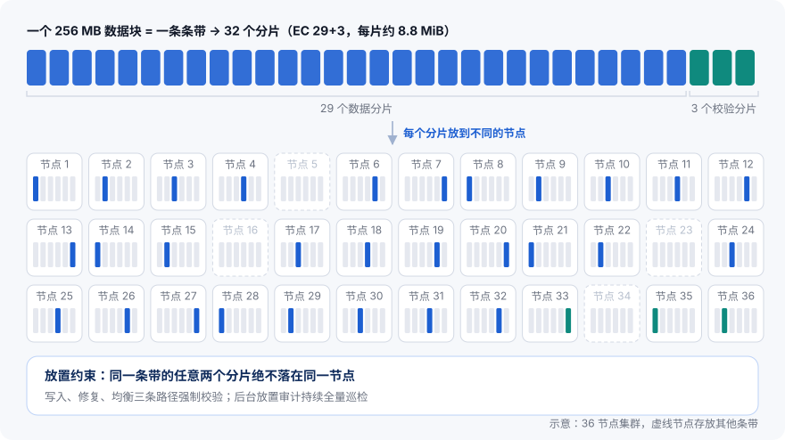
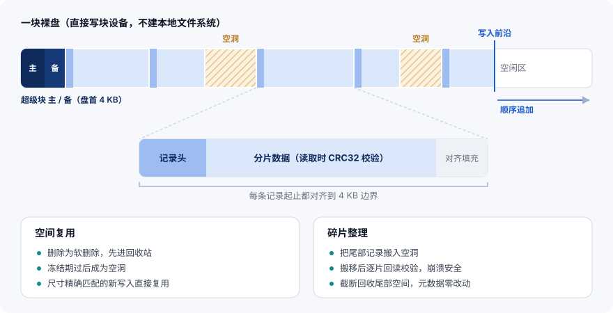
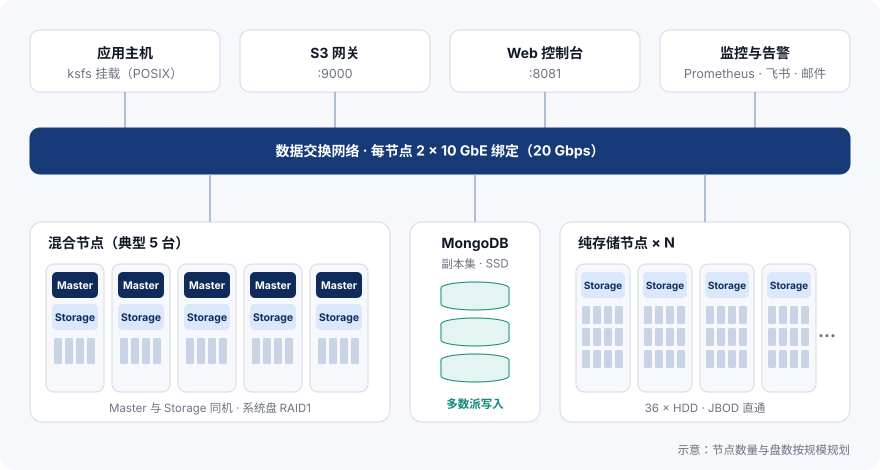

技术架构
KDSS 把元数据和数据分开管理：Master 集群与 MongoDB 副本集记录"数据在哪里"，存储节点直接管理裸盘、保存数据本身。客户端在本地完成纠删码编码，把分片并行写到不同节点；读取时逐片校验，缺片当场解码。
三层结构，每一层独立扩展
访问层提供 POSIX 与 S3 两种入口；控制层负责元数据、选主与后台调度；数据层由存储节点组成，横向扩展到数十台。

左右滑动查看完整图示
元数据与数据分离
Master 按条带记录数据位置（每 256 MB 数据一条记录，另有目录与文件元数据），元数据规模小；数据读写不经过 Master。
编码在客户端完成
客户端本地做纠删码编码，分片直接写到各存储节点，写入流量分散到整个集群。
没有单点
Master 多副本自动选主，MongoDB 副本集多数派写入，数据分片分散在不同节点。
组件与端口
下表列出各组件的职责与默认端口，部署时按需在防火墙中放行。
| 组件 | 职责 | 默认端口 |
|---|---|---|
| Master | 元数据管理、选主；调度修复、均衡、垃圾回收与放置审计 | gRPC 6700 指标 6701 |
| Storage | 裸盘读写、存储节点侧本地重建、磁盘健康监测 | gRPC 6800 指标 6801 |
| Web 控制台 | 集群 / 节点 / 磁盘视图、容量面板、Bucket 与访问密钥、告警、审计日志、用户管理 | 8081 |
| S3 网关 | S3 兼容接口，对接 AWS CLI、boto3、s3cmd、Go SDK 等工具 | 9000 |
| MongoDB 副本集 | 保存 inodes、dentries、stripes、nodes、buckets 等元数据集合；zstd 压缩，多数派写入 | 按 MongoDB 部署 |
| ksfs 客户端 | FUSE 挂载，提供 POSIX 文件接口；在客户端本地完成纠删码编码 | — |
kdss_* 指标，/metrics 支持 Bearer 令牌认证。组件之间的 gRPC 可选启用 mTLS，内网部署时可关闭。一次写入：缓冲、编码、并行落盘、提交元数据
以 FUSE 客户端写入、EC 29+3 为例。数据分片全部写入且至少一个校验分片成功后提交元数据，缺少的分片由修复补齐。

左右滑动查看完整图示
缓冲
客户端把写入数据缓冲到 256 MB，凑成一个完整的数据块。
申请条带
向 Master Leader 申请条带，得到条带 ID 和 32 个目标节点。
本地编码
用 Reed-Solomon（SIMD 加速）编码为 29 个数据分片和 3 个校验分片，每片约 8.8 MiB。
并行写入
32 个分片同时写到 32 个不同节点；存储节点顺序追加到裸盘，并按 fsync 策略落盘。
提交元数据
29 个数据分片全部写入、且至少 1 个校验分片写入成功后，向 Master 提交条带元数据，写入 MongoDB 副本集多数派；未写成的校验分片由修复补齐。
逐片校验，缺片当场解码
每个分片都要通过 CRC32 校验和身份核对才会被使用。少了分片不会导致读取失败，而是用其余分片实时还原。

左右滑动查看完整图示
查询位置
向 Master 获取条带的分片位置，即每个分片位于哪个节点。
并行读取
同时读取各分片。每片都做 CRC32 校验，并核对条带 ID 与分片序号，防止错误路由读到其他数据；流式读取同样校验。
缺片解码
分片缺失或校验不符时，用其余分片实时解码。29+3 下只要有任意 29 片可用，数据就能完整读出。
返回数据
还原后的数据返回给应用；缺失的分片由修复流程在存储节点侧重建。
条带与放置：一条条带，32 个节点
一个 256 MB 数据块就是一条条带。条带粒度大：按条带记录数据位置（另有目录与文件元数据），元数据规模小；生产环境在管条带已达数亿条。

左右滑动查看完整图示
放置约束
- 同一条带的分片绝不落在同一节点：任何一台节点故障，每条条带最多缺 1 片。
- 写入、修复、均衡三条路径都强制校验。
- 后台放置审计持续全量巡检。
修复
- 存储节点侧本地重建：拉取存活分片、本地解码落盘，减少中转。
- 按缺失分片数"最劣先修"；数十万条带的修复任务分钟级入队，由多个 Master 分布式领取。
- 原位修复：换盘后把数据写回新盘的原位置。
| 档位 | 最少节点 | 得盘率 | 容错 |
|---|---|---|---|
| EC 5+2 | 8 | 71.4% | 2 |
| EC 9+2 | 12 | 81.8% | 2 |
| EC 18+3 | 22 | 85.7% | 3 |
| EC 29+3 | 33 | 90.6% | 3 |
以上为自动选型档位，按集群节点数自动选择，均为保守安全默认。19+3、21+3、22+3、31+3、31+2 等高密度档位需手动启用。完整说明见容量规划。
裸盘布局：不建文件系统，直接顺序追加
存储节点绕过本地文件系统直接写块设备。顺序追加、4 KB 对齐，减少寻道，有利于延长硬盘寿命。

左右滑动查看完整图示
超级块与盘身份
主、备两份超级块，CRC 保护。盘自带节点 ID、盘 ID、盘 UUID；换槽位、换盘符后启动自动识别纠正，接错盘拒绝启动。
记录与校验
本地索引使用 BadgerDB。每次读取都做 CRC32 校验，流式读取同样校验；后台 CRC 巡检可限速（默认 20 MB/s/节点）。
崩溃恢复
干净关机秒级启动；异常断电从写入前沿向前扫描补齐索引；整理中断可整盘重建索引。所有磁盘并行打开。
fsync 策略
immediate（默认，每次写入落盘）、batch（组提交）、deferred（后台每 5 秒落盘，断电可能丢失最近约 5 秒的写入；适合有掉电保护且可接受该窗口的场景）三种可选。
空间复用与整理
删除为软删除，经回收站和冻结期后，空洞按精确尺寸复用；碎片整理把尾部数据搬入空洞后截断回收，逐片回读校验。
三级容量保护
集群达到拒写线（默认 99%）停止新写入、保留修复；单盘达到上限（默认 99.5%）只接修复；单盘剩余不足 4 GiB 完全只读。
多 Master 选主，升级不停服
控制层没有单点。Master 任何一台故障，Leader 自动切换；存储节点默认逐台升级，业务读写不中断。
Master 多副本
典型部署 5 台 Master，通过 MongoDB 副本集选出 Leader。
多数派写入
元数据写入 MongoDB 副本集的多数成员后才确认。
Leader 自动切换
Leader 故障后由其余 Master 自动接任，无需人工干预。
写请求重定向
写请求自动重定向到当前 Leader，应用无需感知切换。
滚动升级流程
进入维护模式
节点进入维护模式（cordon），不再接收新写入。
等待在途写入清零
已开始的写入全部完成后再继续。
替换并验证
替换程序并重启，确认节点恢复正常。
退出维护，下一台
默认逐台进行，全程对业务透明。
混合节点 + 纯存储节点
Master 与 Storage 可以混合部署在系统盘为 RAID1 的节点上，其余节点只运行 Storage。容量不够时，加存储节点即可。

左右滑动查看完整图示
| 项目 | 建议（来自生产实践） |
|---|---|
| 存储节点 | 36 × 16 TB 企业级 HDD（JBOD 直通），Xeon 20 核级 CPU，64 GB 内存 |
| 网络 | 每节点 2 × 10 GbE 绑定（20 Gbps） |
| 系统盘 | RAID1；Master 部署在系统盘为 RAID1 的节点上 |
| Master | 典型 5 台，与 Storage 混合部署 |
| MongoDB 副本集 | 部署在 SSD 上 |
| 最小规模 | 8 个节点（EC 5+2） |
需要一份针对您机房的部署方案？
告诉我们数据规模、访问方式和硬件条件，我们会给出节点数量、纠删码档位与网络规划建议。